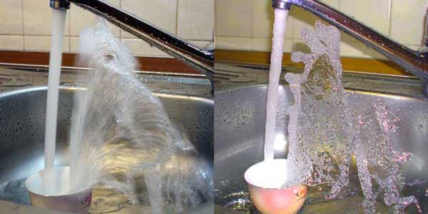

Form of water
Water from a faucet is pouring into a cup. The flow is photographed with a short and long exposure. Instant view reveals details of average picture that we normally see.

Water from a faucet is pouring into a cup. The flow is photographed with a short and long exposure. Instant view reveals details of average picture that we normally see.